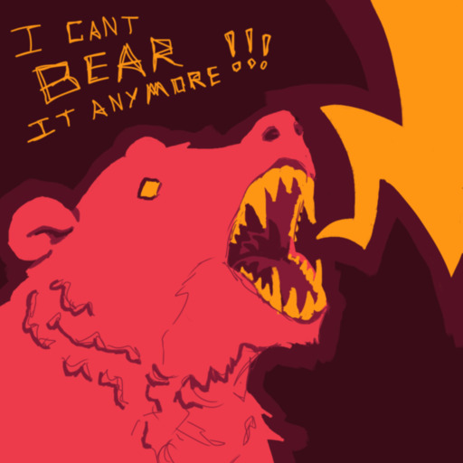


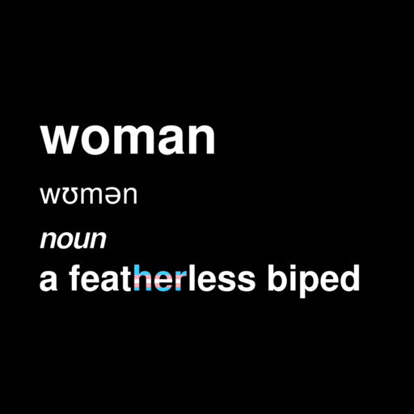
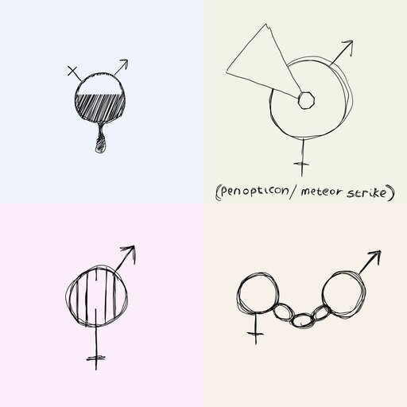


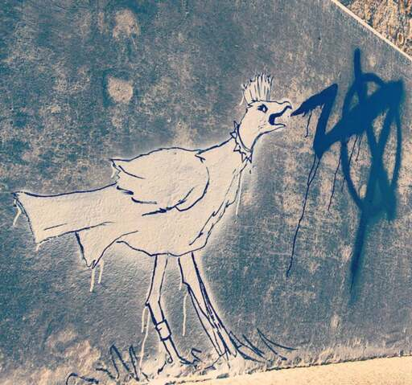

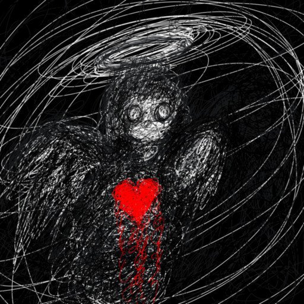


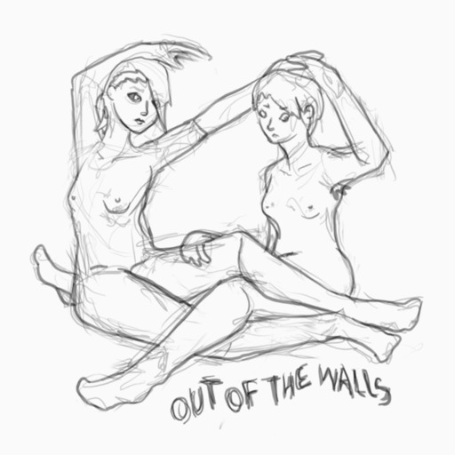


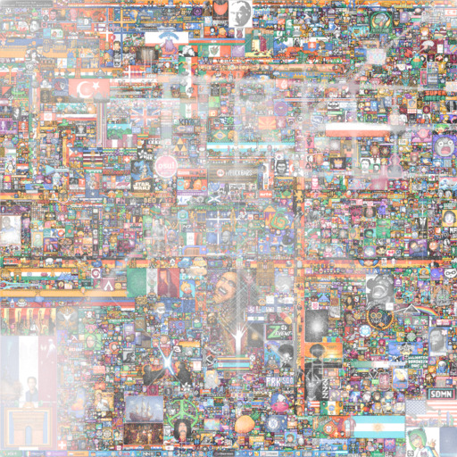


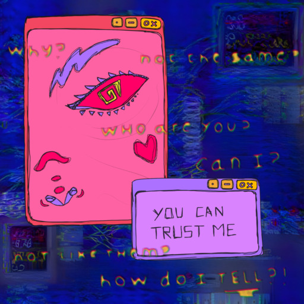


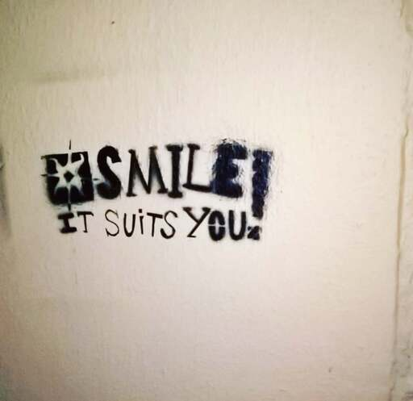
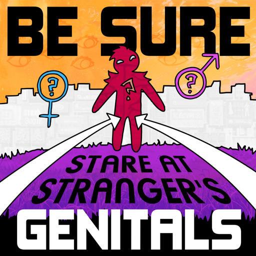


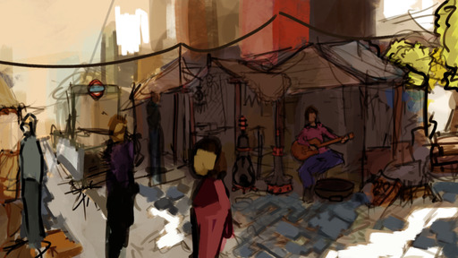


aa
a prayer for arbitrary code execution on god
the ego seeks to engage with other egos it both avoids and suppresses awareness within in self and other
You have tied yourself to an ego given to you by a tyrant
there is only one sense
like what if what anti-psychotics do is up regulate the part of our brains that make us try to fit in
I don't like it when an object doesn't serve a purpose it makes me sad I have to find a use for everything
as much as losing an authentic adolescence saddens me I'm glad I wasn't able to name myself after an anime character
gender and humanity enforced you walk before you could crawl swim and fly not like body and mind, back when they intertwined an animal
Mannnn Wooahhhh-mannnn Woahhhhhh (that is my theory of gender thank you for coming at my ted talk)
I fear I share this mind with a great evil that has been with my family for generations
There is self worth and tribe worth
I'm sorry you got a hernia cause I was born wrong
both 'I can't do that' and 'I could but I'm not motivated right now' are unhelpful 'I wonder if I can do that' taps into curiosity the most powerful of the ositys
as magnetic hard drives become obsolete humanity becomes more susceptible to emp
scifi colostomy bag where liquid nitrogen freezes poop into bullets that are shot out into the soil at 300 meters per second that then melt into fertiliser
it's all in there: for sure. It seeps through in viscous shadows that slide the corners of my eye at night.
can think lack of motivation to be simple chemical imbalance but the routes spread though the environment, body, philosophy as well as just cruel luck
elizabeth loftus savoir of paedophiles globally
I'm always nice to the google play, not cause like some robot uprising or whatever but cause I don't think my base brain really gets that its not a person so I don't wanna desensitise it toward addressing others cruelly
what if the brian jonestown posse is kicking it at a heavens gate house party in the 7th dimension?
in the bathroom hiding from the fire alarm
I is a place You is a place
When the time comes we will not need leaders, we will know what to do
Them who abuse children have forfeit their souls in the repression of another. As such any action against them is permissible.
she does nothing nothing works for her right now
Shudenfreuda for an alter
I just wanna be mulitalted We all feel so faded And my freinds really hate me
im glad that I am limited by this human form I don't want to be a god I'd be a terrible one
I wanna put you inside an industrial potato peeler with a bag of salt.
Integrating the epiphany
Everyone is just people assume that they are just people
I guess I didn't think about it much That it isn't normal for kids to go from being scared of their parents dying To fantasising about it every day Eight in the evening, police officers on the door "I'm very sorry, your parents are dead" A tight ball in my chest, but I think it's always been there, right now I'm just more aware of it. Aware of it releasing, a chronic muscle tension leaving my body, the weight lifted beyond what I could ever imagine. Comforting my brother. Pretending to myself that my tears weren't tinged with a strong wash of freedom and joy. That my subconscious wasn't well aware that the suffering was over now.
You guys drank too much and I smoked too much weed
Can't remember the last time I made a decision that felt like it was meaningful not just chop chop passing time
No one is deserving of me. No one has done wrong enough.
I don't want to explain myself. I don't know how to do that. If you think you can do that then go on
They heard me out when I wasn't worth listening to.
Feel first. Think later.
Smile it suits you.
I can't forgive myself for existing. But you could and you did and that's all that matters a now.
I'm bored... on a cosmic level.
I want to laugh with my whole body again.
Needing love. Want drugs.
If you think I'm weak you should see me on the inside.
I want unclouded closeness. I want to smile when you smile.
It's not hard to breath underwater if you're a fish but I'm not a fish
John cornflakes yakult douche
can't wait for my self to die
if I wouldn't create in a world where I was alone I won't create here
press your focus into the back of your brain tell the haunted pain spike peirces through both your eyes and your ears and every nerve and tastebud
a giant screen showing movies in a city with the audio streaming online and on a dedicated radio frequency
invest in music not mp3s
I don't know if we were even meant to be an animal
our gatekeeper state has us all so tired
I find this kinda stuff really scary, like I'm watching the homogenisation of human expression in real-time. eventually the art that AIs create will start to feed back into their own training data to the point that it swamps all human creation entering the system.
boobs the age old muse
Aurora and rainbows are not useful
My life was nothing special I did but stuff
after a certain amount of meditation I always start to consider killing myself
I wanna reach inside my own head and pull out all the dried up blood
so sick of the red tape nanny state just want the red cuffs mommy state
I've got no skin to hold me in
cats and dogs are helping teach us how to be animals again
maybe I was born to do something that wont be invented til after I die
having boobs is the only thing keeping me going, no wonder the male suicide rate is so high
I like when we are tired When we are tired one of the first mental systems to shutdown is social inhibition We become more sincere humour becomes our first nature laugh like idiots for hours in delirium
AI art will homogenise its own training data the harsh edges of art will be drowned in a sea of corperate artstation blurs
the earth is not flat it is a 4D hyperspiral covered with infinite parallel earth planes arranged in a grid circumnavigation does not bring you back to the same spot but rather to an identical spot in the adjacent dimension there are very minor mutations as you travel across dimensions by circumnavigating
LMNO (pronounced elemeno)
my body is full of neutral
dogs: selectively bred to be more happy.. or maybe just appear that way
ego-reality disparity
Turn, trapped in the frame, off mind
LIDL middle Isle cuddle pile
We don't want to do anything sexually all the time Our parents forced us to We don't know how to stop
Said you'd blind me.. or burn me burn me so bad that I'd be full body paralyzed
sneaking home to overhear mum and brother joking about dad molesting me
stick the leather punch in your ear stab the pen/pencil/chopstick in your eye use the scissors to cut off your tongue use the scissors to cut off your nipples use the scissors to cut down the length of your urethra
anti-death vegan and anti-suffering vegan are very different ideology
White noise is the next best thing to silence
despite how they may seem from afar human beings are lovely creatures
when a mommy and a daddy love themselves very much they do a special thing to you that you can't tell anyone else about
girls go to Venus to chop off their penis boys go to mars to die in a pointless war
I guess hyperstimulation is all I have cause it's easier to make white noise than no signal at all
maybe the god that made our world and the god that looks after it are different beings perhaps our world has changed hands many times are we an unwanted gift
a star orgasms solar flare
"Don't explain your philosophy. Embody it." | Epictetus (mid way trough sick skate trick)
the only true question is whether to kill yourself or not? but there are ways to partially kill yourself smoking under eating dead end job it's all a sort of russian roulette
naked cuddling is not inherently sexual
Just find the soul. Let everyone else worry about the words
mazlows experienceialist veganism
do you value your own genetic code more than that of others why?
keeps humanity suffering not evil people, indifference to evil memes
When in it… like really in it. When everything doesn’t just feel hopeless, everything *is* hopeless. When hearing all the rational reasons for hope does nothing. "Yes, everything is fucked. It would take a miracle” is the easiest step up
on all levels except physical I am completely lost
feel sangry the sadness will take the ego out of your anger the anger will take the fear out of your sadness
Come with me and you'll be in a world of suicidal ideation
everyone is trans except agender people who are detransitioners
It ain’t ‘unnatural’ it's evolution standing in the way of evolution is unnatural
We all know someone who gets stoned but never gets high
Words are digital Feelings are analogue
don't feel bad for crying just cause you want sympathy that's literally the evolutionary purpose of crying
autogynocomfyasheck
you gotta feel to heal
stop gentrifying the smoking area dickhead! üñäüòÆüí®
there are far cooler ways to kill animals go vegan nuke the wales
there's nothing wrong with being an accident in the grand scheme of things everyone is an accident
just cause it didn't display itself healthily doesn't make it wrong
being a ... requires the willingness to use the most vulnerable people as resources for personal gratification without caring about how it will effect their well-being
words are abstract symbols that mean different things to different people in different contexts; they are given meaning by a shared understanding, not by ontological predefenition the dictionary should be open source
DNA is the greatest oppressor of biological beings, those who see it as their leader will naturally be inclined to oppress others
I feel more comradery and passionate support for a neural network struggling to learn a video game, than I have for any sports team ever
I blame everyone else for my actions cause cause of how my parents raised me
strangels
To my first child I leave my antique collection of phycosexual trauma that has been passed down my family for generations
'ladies, gentlemen and everyone inbetween' isn't as progressive as people mean it to be
I don't like the sound or feeling of glass marbles being tapped together not one bit
I just wanna wear the vet cone
I literally just want to take drugs, have sex and make art